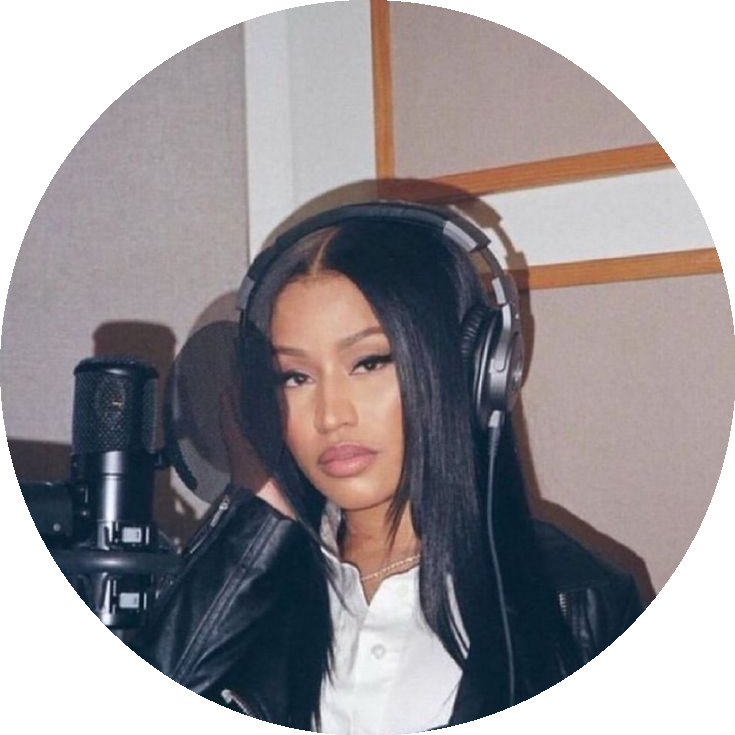

Nicki Minaj
Rapper
Sou apaixonada por
Rap e hip hop
Minha carreira e os Barbz
Moda e estética
Spotify
TikTok
Instagram
X
Hobbies
✍️ Escrever rimas e poesia
🎬 Atuar nos filmes e dublagens
🍛 Cozinhar pratos caribenhos
👗 Moda e maquiagem
Projetos Recentes
Álbum Pink Friday 2 (2023):
Lançado em dezembro com 22 faixas.
Turnê Pink Friday 2 World Tour (2024):
Passou por vários países da América do Norte e Europa.
Moda & Beleza:
Lançou sua linha de unhas postiças: Pink Friday Nails (2024).